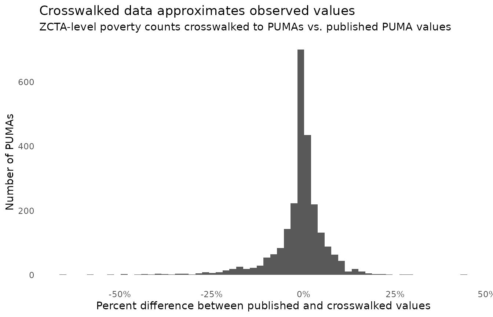

Crosswalking produces estimates: when a source geography is
split across several target geographies, its values must be apportioned,
and every apportionment rests on assumptions. This vignette explains
exactly what crosswalk_data() computes, how to choose the
weight that drives it, and how to assess the quality of the
results.
Allocation factors
Every crosswalk relates source geographies to target geographies with an allocation factor: the share of the source unit’s weighting attribute (population, housing units, or land area) that falls inside each target unit. Consider a miniature crosswalk in which source unit “A” lies entirely inside target “X”, while source unit “B” is split between “X” (a quarter of B’s population) and “Y” (three quarters):
toy_crosswalk <- tribble(
~ source_geoid, ~ target_geoid, ~ allocation_factor_source_to_target,
"A", "X", 1,
"B", "X", 0.25,
"B", "Y", 0.75)Allocation factors for each source unit sum to 1 (all of a source unit’s weight lands somewhere), and the crosswalk has exactly one row per source-target pair.
Interpolating counts
For count variables (population, households, loan originations, …), each source value is multiplied by the allocation factor and the products are summed within each target geography:
toy_data <- tribble(
~ source_geoid, ~ count_people,
"A", 100,
"B", 400)
crosswalk_data(
data = toy_data,
crosswalk = toy_crosswalk,
silent = TRUE)
#> # A tibble: 2 × 2
#> geoid count_people
#> <chr> <dbl>
#> 1 X 200
#> 2 Y 300Target X receives all of A plus a quarter of B (100 + 0.25 x 400 = 200), and target Y receives the remaining three quarters of B (300). The total (500) is preserved: counts are neither created nor destroyed, only reapportioned.
The embedded assumption: the variable being crosswalked is
distributed across the source unit proportionally to the weighting
attribute. Allocating a quarter of B’s loan originations to X is
exactly right only if B’s loans are distributed like B’s population.
This is why matching the weight to your variable matters
(see below) – and why results for small areas should be treated as
estimates.
Interpolating non-count variables
Means, medians, percentages, and rates can’t be summed. For these,
crosswalk_data() computes a weighted mean of the
source values within each target geography, using the allocation factors
as weights:
toy_medians <- tribble(
~ source_geoid, ~ median_income,
"A", 50000,
"B", 100000)
crosswalk_data(
data = toy_medians,
crosswalk = toy_crosswalk,
silent = TRUE)
#> # A tibble: 2 × 2
#> geoid median_income
#> <chr> <dbl>
#> 1 X 60000
#> 2 Y 100000Target X’s value is (1 x 50000 + 0.25 x 100000) / 1.25 = 60000.
Two approximations are involved:
- A weighted mean of medians is not a median. The true median income of X’s residents depends on the full income distributions of A and B, which the crosswalk does not carry. The same applies to percentages: the exact percentage for X would weight each source’s percentage by its denominator population in X, which is only approximated here.
- Allocation factors are shares, not sizes. The factor 0.25 says “a quarter of B goes to X” – it does not say how large B is relative to A. If B has ten times A’s population, B’s quarter inside X contains far more people than all of A, but the weighted mean gives A four times B’s weight (1 vs. 0.25). The approximation is most accurate when source units are of broadly similar size, as census units within a geography type generally are.
When precision matters for a non-count variable, a more accurate route is to crosswalk its components as counts (numerator and denominator separately) and recompute the ratio at the target level.
Choosing a weight
The weight argument controls which attribute the
allocation factors are built from:
weight |
Allocates by | Use for |
|---|---|---|
"population" (default) |
Resident population in the overlap | People-denominated variables: population counts, poverty, demographic shares |
"housing" |
Housing units in the overlap | Housing-stock variables: units, tenure, vacancy, home loans |
"land" |
Land area of the overlap | Land-based variables, or when settlement patterns are irrelevant |
Guidance:
- Match the weight to the variable’s denominator. Housing-unit weights allocate a tract’s housing stock more faithfully than population weights do (group quarters hold people but no housing units, for example).
- Population and housing weights are usually similar; land-area weights can differ dramatically in sparsely settled areas (a target unit covering 90% of a source’s land might hold 5% of its people).
-
NHGIS caveat: block-based NHGIS crosswalks publish
a single combined interpolation weight, so
weightdoes not vary the allocation factors for those crosswalks. Tract- and block-group-level NHGIS crosswalks do provide distinct population and housing weights. Theweighting_factorcolumn of the returned crosswalk always records what was actually used. - County-events crosswalks use
"identity"weights for unchanged and renamed counties (factor 1) and population-based factors for splits and part transfers, regardless ofweight.
Assessing accuracy against published values
For geographies the Census Bureau publishes directly, we can check
crosswalked estimates against observed values. Here we crosswalk
ZCTA-level poverty counts to PUMAs, then compare against the ACS’s own
PUMA-level figures. (This section queries the Census API, so it requires
a CENSUS_API_KEY.)
zcta_poverty <- tidycensus::get_acs(
year = 2023,
geography = "zcta",
output = "wide",
variables = c(below_poverty = "B17001_002"),
progress_bar = FALSE) |>
select(
source_geoid = GEOID,
count_below_poverty = below_povertyE)
puma_poverty_crosswalked <- crosswalk_data(
data = zcta_poverty,
source_geography = "zcta",
target_geography = "puma",
weight = "population",
silent = TRUE)
library(ggplot2)
puma_poverty_published <- tidycensus::get_acs(
year = 2023,
geography = "puma",
output = "wide",
variables = c(below_poverty = "B17001_002"),
progress_bar = FALSE) |>
select(
puma_geoid = GEOID,
count_below_poverty_published = below_povertyE)
comparison <- puma_poverty_published |>
left_join(puma_poverty_crosswalked, by = c("puma_geoid" = "geoid")) |>
mutate(
difference_percent =
(count_below_poverty_published - count_below_poverty) /
count_below_poverty_published)
comparison |>
ggplot() +
geom_histogram(aes(x = difference_percent), bins = 60) +
theme_minimal() +
theme(panel.grid = element_blank()) +
scale_x_continuous(labels = scales::percent) +
labs(
title = "Crosswalked data approximates observed values",
subtitle = "ZCTA-level poverty counts crosswalked to PUMAs vs. published PUMA values",
y = "Number of PUMAs",
x = "Percent difference between published and crosswalked values")
Most PUMAs land within a few percent of their published values. The residual error comes from the proportional-distribution assumption above – and it shrinks as source units get smaller relative to target units. Crosswalking from block groups instead of ZCTAs would track published values more closely; crosswalking from large units to small ones (counties to tracts, say) deserves much more skepticism than the reverse.
Also note both sides of this comparison are survey estimates with their own margins of error. The package does not propagate ACS margins of error through interpolation.
Diagnosing join quality
Interpolation can only be as good as the join between your data and
the crosswalk. Data GEOIDs missing from the crosswalk are
dropped (their values allocate nowhere), so
crosswalk_data() reports on the join as it runs and
attaches the full statistics to its result as the
join_quality attribute – computed even when messages are
silenced:
join_quality <- attr(puma_poverty_crosswalked, "join_quality")
## share of data GEOIDs that failed to match the crosswalk (dropped)
join_quality$pct_data_unmatched
#> [1] 0.4234277
## the unmatched GEOIDs themselves
head(join_quality$data_geoids_unmatched)
#> [1] "01144" "02203" "04737" "05009" "10020" "10115"
## share of crosswalk GEOIDs with no data (usually benign: geographies
## with no observations in your data)
join_quality$pct_crosswalk_unmatched
#> [1] 0.008920076A small unmatched share is common – GEOID vintages differ subtly across products, and some datasets use placeholder codes. A large share usually means a vintage mismatch: e.g., 2023-vintage tract data joined to a crosswalk built for 2010s-era tracts. Checking a few unmatched GEOIDs against the Census geocoder or the source data’s documentation usually identifies the problem quickly.
For state-nested geographies (counties, tracts, block groups,
blocks), the attribute also reports whether unmatched GEOIDs concentrate
in particular states (state_analysis_data; see
?crosswalk_data). Concentration is a diagnostic clue:
unmatched GEOIDs spread thinly across many states suggest scattered data
quirks, while a pile-up in one state suggests a systematic boundary or
vintage issue (Connecticut’s 2022 county change is a frequent
culprit).
ZCTAs cross state lines, so state analysis doesn’t apply to the example above. For non-nested geographies, joining unmatched GEOIDs to spatial data is an effective way to look for patterns:
## e.g., where are unmatched ZCTAs concentrated? (requires sf + tigris)
zctas_sf <- tigris::zctas(year = 2023, progress_bar = FALSE)
states_sf <- tigris::states(year = 2023, cb = TRUE, progress_bar = FALSE)
zctas_sf |>
dplyr::filter(GEOID20 %in% join_quality$data_geoids_unmatched) |>
sf::st_intersection(states_sf |> dplyr::select(NAME)) |>
sf::st_drop_geometry() |>
dplyr::count(NAME, sort = TRUE)When we ran this diagnosis on the ZCTA -> PUMA example, unmatched ZCTAs were roughly proportional to state populations – except for a disproportionate cluster in Washington, DC corresponding to federal areas and buildings: real ZCTAs, but ones with no place in a population-weighted crosswalk.
Summing up
- Counts are apportioned by allocation factor and summed; totals are preserved.
- Non-counts are approximated by allocation-factor-weighted means; when precision matters, crosswalk numerators and denominators as counts instead.
- Match
weightto your variable’s denominator. - Check the
join_qualityattribute – unmatched data rows are dropped, and a concentrated pattern of unmatched GEOIDs usually signals a vintage mismatch. - Prefer small source units relative to target units; treat the reverse with skepticism.